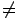
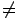

| Geometric Interpretation |
|
5 |
 |
|
 |
Let F(t) be a polynomial of degree
k(d+1-k) with distinct roots
s1, s2, ...,
sk(d+1-k).
Then the linear spaces of polynomials
f1(t),
f2(t), ...,
fk(t)
with Wronskian F(t) are cut out by the solutions
H to the system of equations
| det | |
|
|
= 0 | for each i = 1,...,k(d+1-k). |
 H
 {0}
for each i = 1,...,k(d+1-k).
H
 {0}
for each i = 1,...,k(d+1-k).